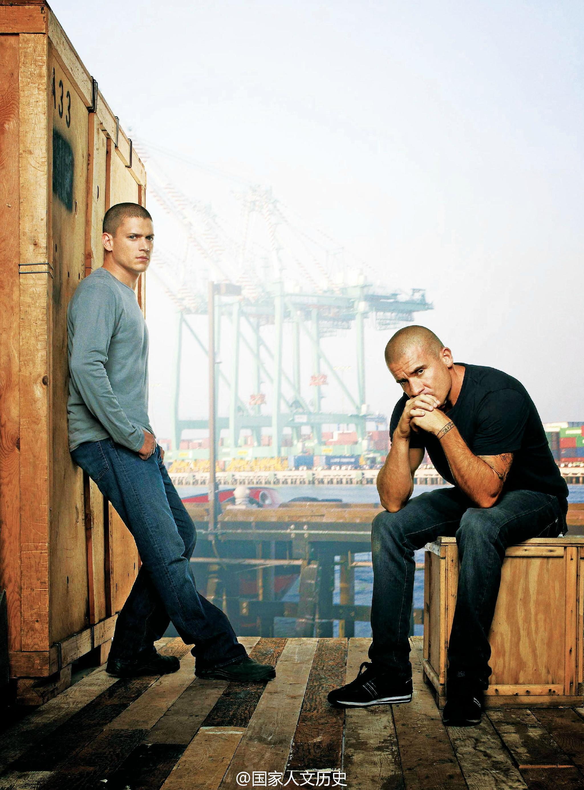
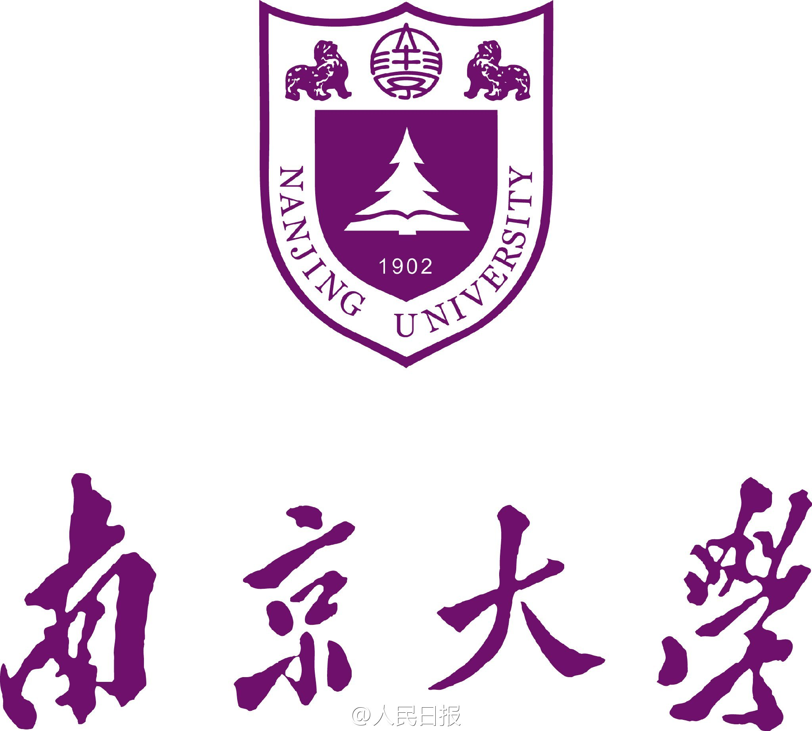
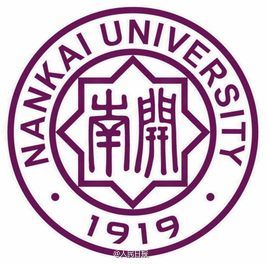
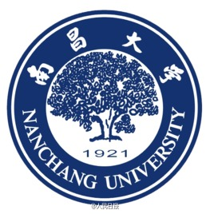

打开了一封两星期前寄来忘了打开的广告信，上面写着黑色星期五的时候一些杂志打折到5美元一年，包括一个我们打算续订的杂志。上网一看发现到前天截止了。心里这叫一个难受……

斯图亚特9
2014-12-03
斯图亚特9
2014-12-03
论统治技术，毛泽东真是厉害。历代帝王，抄家分地容易做到，焚书坑儒能做到。能做到让士人主动做思想改造的，这是历史独一个了吧。能发动群众批评审判士大夫，这能做到的也不多吧。  美国Millbrae
美国Millbrae
斯图亚特9
2014-12-03
把港台剧和日剧并列，真往同胞脸上贴金啊……
@国家人文历史:
#杂志# 本世纪以来，美剧在中国的大学生、白领阶层中形成了一个稳定的收视群体。一个流传甚广的说法是，看英剧的瞧不起看美剧的，看美剧的瞧不起看日剧、港台剧的，看日剧、港台剧的瞧不起看韩剧、泰剧的，而看国产剧的处于收视歧视链的最底端。——《美剧，看上去很美》 国家人文历史 原文史参考 2014年6月上第11期 总第107期 期刊杂志
国家人文历史 原文史参考 2014年6月上第11期 总第107期 期刊杂志
- 
斯图亚特9
2014-12-03
南开为什么要争叫南大？没有人跟清华人抢清大，清华人也不叫。 //@哥廷根大学:南开大学想叫南开，可是南开中学不让啊 //@Escudo:南大，不是南加州大学吗？//@CAQ9: 这个也要统一啊//@梁斌penny:母校威武！南开，昌大也都蛮好听的啊。//@WangHJ_Harbor: 转发微博
@人民日报:
【别争了！以后“南大”就是南京大学！】南京大学、南开大学、南昌大学……一直以来，关于“南大”究竟是谁家的简称总有争议。日前，南京大学正式公布经教育部核准的《南京大学章程》全文，在第一章总则中明确简称“南大”。据悉，南开大学章程则明确其简称为“南开”。别争了！以后“南大”就是南京大学扩散周知！
- 
- 
- 